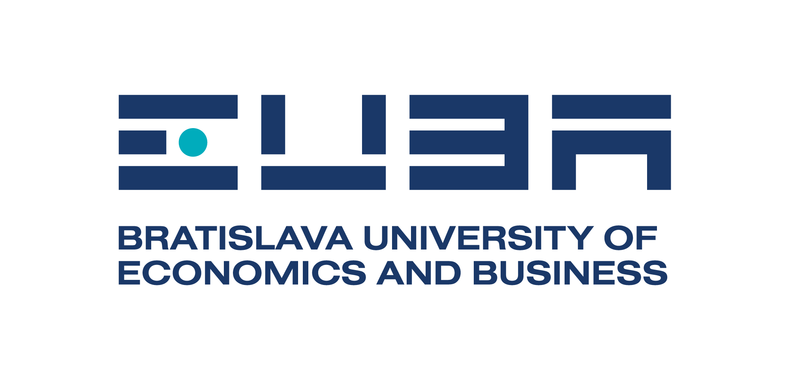
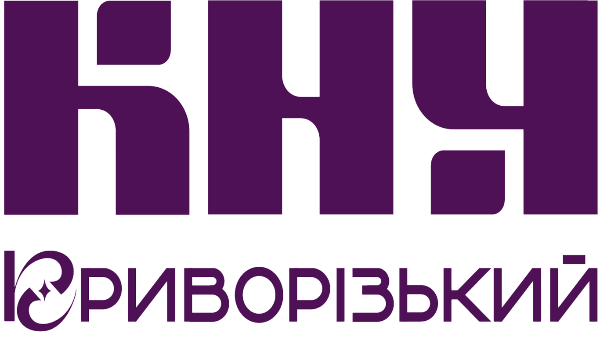
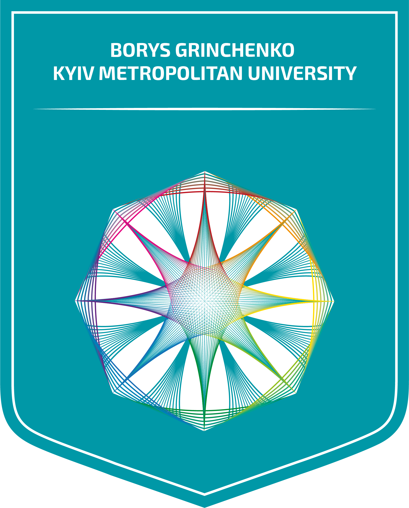
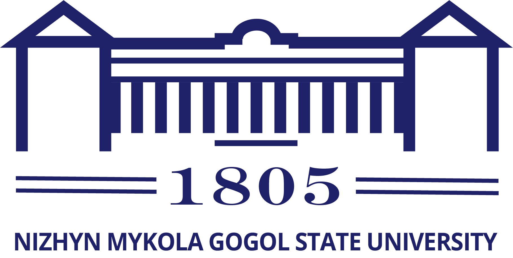
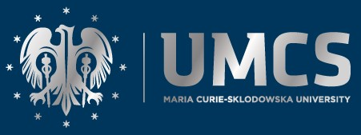
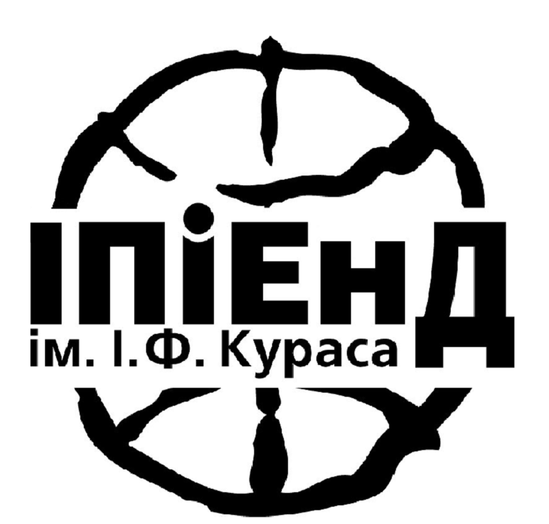
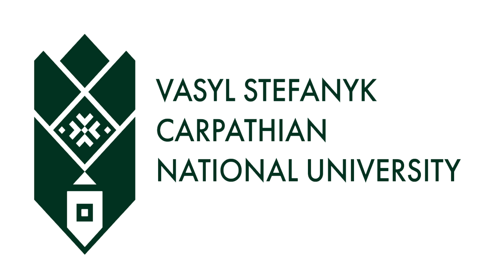

НАШІ ПАРТНЕРИ
Познайомтеся з нашим консорціумом
12 партнерських організацій з України та Європейського Союзу спільно працюють над проєктом
Український державний університет імені Михайла Драгоманова (УДУ)
заснований у 1834 році, є одним із класичних університетів України, має найвищий четвертий рівень акредитації та входить до числа провідних закладів вищої освіти країни. Сьогодні університет налічує 13 факультетів та забезпечує навчання майже 9 000 студентів. Освітній процес здійснюють близько 1200 науково-педагогічних працівників. До академічної спільноти університету входять 16 академіків і членів-кореспондентів Національної академії наук України, 79 докторів наук (професорів) та понад 400 докторів філософії (доцентів). Український державний університет імені Михайла Драгоманова реалізує широкий спектр освітніх програм у таких галузях, як освітні науки і педагогіка, психологія, гуманітарні та соціальні науки, іноземні мови, економіка і менеджмент, бізнес і публічне управління, природничі науки, математика та інформатика, історія, дизайн і хореографія, а також фізична культура і спорт та музичне мистецтво. В університеті здійснюється підготовка здобувачів за освітніми програмами бакалаврського та магістерського рівнів за денною, вечірньою, заочною та дистанційною формами навчання. Також реалізуються програми підготовки докторів філософії (PhD). Присудження наукових ступенів забезпечується діяльністю 21 спеціалізованої вченої ради із захисту дисертацій. УДУ активно розвиває міжнародне співробітництво з близько 100 університетами Європи та є членом Європейської асоціації університетів і Міжнародної асоціації університетів. Одним із стратегічних пріоритетів університету є інтеграція до Європейського простору вищої освіти шляхом узгодження інституційного розвитку, освітніх програм і наукової діяльності з європейськими стандартами та активної участі у міжнародних освітніх і наукових програмах. Університет виступає координатором і партнером проєктів Erasmus+, Interreg EU, EU4Youth та інших міжнародних програм.

Економічний університет у Братиславі (EUBA)
найстаріший і найбільший університет Словаччини, що спеціалізується на економіці, менеджменті та міжнародних відносинах, із традицією, що бере початок з 1940 року. Сьогодні університет пропонує сучасну освіту на бакалаврському, магістерському та докторському рівнях у межах семи факультетів і має престижну міжнародну акредитацію AACSB, яку мають менш ніж 6 % бізнес-шкіл світу. EUBA підтримує понад 300 партнерств з університетами у більш ніж 60 країнах світу та активно бере участь у міжнародних програмах академічної мобільності й наукових досліджень, зокрема Erasmus+ та CEEPUS. Факультет міжнародних відносин університету забезпечує міждисциплінарну освіту, що поєднує міжнародну економіку, дипломатію та міжнародне право, приділяючи особливу увагу вивченню іноземних мов і набуттю практичного досвіду завдяки співпраці з посольствами, інституціями Європейського Союзу та міжнародними організаціями. У межах цього проєкту EUBA робить внесок завдяки своїй експертизі в аналізі процесів європейської інтеграції, економічних та інституційних реформ, а також досвіду Словаччини щодо успішного вступу до Європейського Союзу та адаптації до Єдиного ринку ЄС і Єврозони.

Криворізький національний університет
є науковим серцем Криворізького залізорудного басейну, одного з найбільших гірничодобувних регіонів Європи. За свою столітню історію університет накопичив величезний досвід співпраці з великими гірничодобувними компаніями, і більшість його випускників займають керівні посади в галузі. Пріоритетні напрямки досліджень включають розробку ресурсоефективних технологій, управління відходами та впровадження принципів сталого розвитку. Університет також має багатий і успішний досвід участі в проєктах Erasmus+, що посилило його міжнародну співпрацю та якість освіти. Його наукові публікації та щорічні конференції зі сталого розвитку мають значний позитивний вплив на інженерну спільноту, просуваючи принципи Green Deal та цифрову трансформацію в гірничодобувній промисловості, одночасно виховуючи нове покоління агентів змін у галузі.

Бердянський державний педагогічний університет
український заклад вищої освіти, що спеціалізується на підготовці педагогів, журналістів, істориків, філологів, музикантів, хореографів, спортсменів, психологів та юристів. Університет було релоковано до м. Запоріжжя, і нині він функціонує як «університет без стін». В університеті навчається понад 4000 студентів, зокрема 2 744 здобувачі бакалаврського рівня, 1 898 — магістерського рівня та 34 аспіранти. Університет активно розвиває освітню, наукову та міжнародну діяльність, зберігаючи академічну спільноту та освітні традиції навіть в умовах воєнного часу.

Київський столичний університет імені Бориса Грінченка
це сучасний міський університет у самому серці столиці України та важлива академічна інституція, що служить місту Києву та його громаді. Спираючись на міцні традиції академічної досконалості та громадянської відповідальності, університет об’єднує понад 9 000 студентів на 13 факультетах, пропонуючи широкий спектр освітніх програм бакалаврського, магістерського та докторського рівнів. Як сучасний заклад вищої освіти, орієнтований на європейські цінності та стандарти, університет Грінченка розвиває міждисциплінарне навчання, динамічну академічну культуру, а також формує лідерство, громадянську активність і відповідальне служіння суспільству. Керуючись принципами доброчесності, відповідальності та різноманіття, університет готує соціально активних фахівців і майбутніх лідерів змін, здатних формувати сучасне суспільство. Зростаючий міжнародний авторитет університету підтверджується членством у провідних академічних мережах і об’єднаннях, зокрема в Міжнародній асоціації університетів, Європейській асоціації університетів та альянсі європейських університетів NEOLAiA. Завдяки активній участі в програмах ЄС (Erasmus+, Horizon Europe, Creative Europe, DAAD тощо) університет розвиває міжнародні партнерства, сприяє академічній мобільності та реалізує спільні наукові дослідження й інноваційні освітні практики в Європі та за її межами.

Ніжинський державний університет імені Миколи Гоголя (НДУ)
був заснований у 1805 році та є одним із найстаріших університетів України, що безперервно функціонують. Ніжинський державний університет імені Миколи Гоголя — це невеликий регіональний заклад вищої освіти (понад 2000 студентів і працівників), який активно займається науковою діяльністю та співпрацею, спрямованою на економічний і соціальний розвиток регіону, взаємодіючи з бізнесом, органами влади та громадськими організаціями. Структура Університет пропонує понад 50 освітніх програм бакалаврського, магістерського та докторського рівнів. Після нещодавньої реструктуризації університет складається з трьох факультетів: Факультет педагогіки, психології, соціальної роботи та мистецтв (освітні програми з психології, клінічної психології, освіти, дошкільної освіти, початкової освіти, соціальної роботи, музичного мистецтва, хореографії, менеджменту) Факультет філології, історії та політико-правових наук (освітні програми з германської та слов’янської філології, викладання іноземних мов, перекладу, літератури, культурології, історії, археології, міжнародних відносин, політології, правознавства, журналістики) Факультет природничо-математичних, медико-біологічних наук та інформаційних технологій (освітні програми з біології, фармації, прикладної фізики та наноматеріалів, освітніх вимірювань, математики, комп’ютерних наук, комп’ютерної інженерії, інформаційних технологій, туризму, географії, хімії) Освітня та наукова діяльність У навчальному процесі використовуються різноманітні методи викладання (від традиційного аудиторного навчання до моделі перевернутого класу), що сприяють ефективному студентоцентрованому навчанню. Лекції, семінари, практичні заняття та консультації створюють умови для формування необхідних компетентностей і поглибленого самостійного вивчення дисциплін. Університет має значний досвід підготовки та підвищення кваліфікації педагогічних кадрів і є одним із національних лідерів у цій сфері. Ніжинський державний університет імені Миколи Гоголя активно розвиває наукову діяльність і співпрацю, спрямовану на економічний і соціальний розвиток регіону, та взаємодіє з бізнесом, органами влади й громадськими організаціями. Науково-педагогічні працівники та студенти університету беруть участь у національних і міжнародних проєктах, результати яких мають вагомий суспільний вплив.

Університет Марії Кюрі-Склодовської в Любліні (UMCS)
заснований у 1944 році, є найбільшим державним університетом у східній Польщі з понад 80-річною академічною традицією. Нині в університеті навчається близько 17 000 студентів, зокрема приблизно 1 800 іноземних студентів із близько 60 країн світу. UMCS пропонує широкий спектр освітніх можливостей: близько 100 напрямів навчання та понад 300 спеціалізацій, що відповідають потребам сучасного ринку праці. Докторська підготовка здійснюється у трьох докторських школах: Школі докторантури гуманітарних наук, Школі докторантури соціальних наук та Школі докторантури кількісних і природничих наук. Університет також пропонує численні програми післядипломної освіти, розроблені у співпраці з бізнесом та соціальними партнерами. Наукові дослідження в UMCS здійснюються у 23 інститутах і підтримуються сучасними лабораторіями та постійно оновлюваною дослідницькою інфраструктурою. Університет активно співпрацює з науковими установами, університетами, промисловими підприємствами та органами державного управління в Польщі та за її межами. UMCS активно бере участь у міжнародній співпраці та програмах академічної мобільності, зокрема Erasmus+, і є членом альянсу європейських університетів Athena. У 2017 році Європейська комісія надала університету відзнаку HR Excellence in Research Award, що підтверджує високі стандарти управління науковими дослідженнями та створення належних умов для розвитку науковців.

Інститут політичних і етнонаціональних досліджень ім. І. Ф. Кураса НАН України
є провідною науково-дослідною установою політологічного профілю в Україні. Був заснований у 1991 р. В Інституті функціонує 5 відділів, а саме: Теорії та історії політичної науки; Політичних інститутів і процесів; Політичної культури та ідеології; Проблем міжнародного політичного розвитку; Етнополітології. А також Центр єврейської історії та культури. В Інституті діє спеціалізована вчена рада (Д 26.181.01) з захисту дисертацій на здобуття наукового ступеня доктора наук за спеціальностями - теорія та історія політичної науки; політичні інститути та процеси; етнополітологія та етнодержавознавство. В Інституті працює наукова бібліотека, фонди якої нараховують близько 110 тисяч одиниць. Видається журнал «Політичні дослідження» Інститут є співзасновником наукового видання «Український історичний журнал», збірника наукових праць «Гілея» та ін. Інститут розвиває традиційну співпрацю з державними органами та громадськими організаціями, підтримує контакти з представниками різних партій, рухів, конфесій, бере активну участь у суспільних обговореннях питань щодо оптимальних шляхів суспільно-політичного розвитку України.

Карпатський національний університет імені Василя Стефаника
є класичним університетом, орієнтованим на міжнародні стандарти освіти, акредитованим за найвищим (IV) рівнем. Заснований у 1940 році, він став найбільшим і найвпливовішим закладом вищої освіти в регіоні.
Університет має 12 факультетів, 3 інститути, 1 коледж, 23 навчально-наукові центри, серед яких Міжнародний науковий центр «Обсерваторія», Науковий парк «Карпатський університет», ботанічний сад, дендропарк «Дружба», наукова бібліотека, 2 міжкафедральні лабораторії, 10 наукових лабораторій та центр колективного користування науковим обладнанням.
В університеті навчається близько 18000 студентів усіх спеціальностей та рівнів освіти (включаючи коледж), а також 720 аспірантів. Науково-педагогічний склад налічує 935 працівників, серед яких 174 доктори наук, професори.
Університет активно бере участь у міжнародних наукових колабораціях і реалізував понад 40 міжнародних проєктів.
КНУВС має партнерські зв’язки з понад 80 університетами та організаціями по всьому світу, включаючи установи Європейського Союзу, США та Азії. Університет є членом низки міжнародних консорціумів та організацій, серед яких Європейська асоціація університетів (EUA), Консорціум Варшавських та українських університетів, Міжнародний консорціум університетів, Консорціум університетів регіону Балтійського моря та України, Magna Charta Universitatum, Європейський університетський альянс European Digital UniverCity (EDUC) та Міжнародний консорціум космічних університетів UNIVERSEH.
Як сучасний центр освіти та досліджень, КНУВС має значний вплив на розвиток людського капіталу в регіоні. Місія університету включає:
● поширення інноваційних методів навчання, освітніх технологій та авторських навчальних програм;
● організацію наукових, культурних та методичних заходів, що підтримують і розвивають STEAM-освіту;
● підвищення професійної компетентності та педагогічної майстерності викладачів;
● підтримку освітньої та наукової діяльності здобувачів вищої освіти;
● проведення семінарів, тренінгів та майстер-класів з метою популяризації використання інноваційних освітніх технологій.
Завдяки своїй відданості науковим інноваціям та міжнародній співпраці Карпатський національний університет виступає надійним партнером у реалізації проєктів, спрямованих на сталий розвиток.

Балтійська міжнародна академія
заклад вищої освіти прикладних наук, заснований у 1992 році та розташований у Ризі (Латвія). Академія пропонує академічні та професійні освітні програми бакалаврського і магістерського рівнів для латвійських та іноземних студентів у таких галузях, як менеджмент, адміністрування та управління нерухомістю; економіка; готельно-ресторанна справа, організація туризму та рекреації; мистецтво. Балтійська міжнародна академія є науковою установою, що спеціалізується на соціальних і гуманітарних науках. Частка науково-педагогічних працівників, які мають науковий ступінь доктора, становить понад 60 %. Основними науковими напрямами діяльності академії є: менеджмент і економіка підприємництва; стала цифрова трансформація економіки та фінансів; дизайн і цифрова візуалізація; когнітивні механізми формування та зміни імпліцитних установок у соціальній психології та сферах їх застосування; міжособистісна та міжгрупова комунікація у соціальній сфері; захист прав людини в Європейському Союзі; регіональний потенціал туристично-рекреаційних територій. Дослідження, що проводяться в Лабораторії соціальних і нейрокогнітивних імпліцитних процесів Балтійської міжнародної академії, є науковою основою для здійснення фундаментальних досліджень когнітивних механізмів імпліцитних установок, а також сучасних прикладних досліджень, спрямованих на вивчення імпліцитних установок у психології та суміжних галузях. Академія видає періодичний науковий журнал «Baltic Journal of Legal and Social Sciences», який з 2023 року індексується в базі даних ERIH+. Балтійська міжнародна академія поєднує різноманітні освітні, наукові та інноваційні види діяльності з метою забезпечення латвійського суспільства міжнародно визнаною вищою освітою, розвитку науки та зміцнення міжкультурних традицій. Місією Балтійської міжнародної академії є підготовка висококваліфікованих і конкурентоспроможних фахівців, орієнтованих на безперервне самовдосконалення та довгостроковий сталий розвиток суспільства і національної економіки Латвії та інших країн, шляхом надання високоякісної, міжнародно визнаної вищої освіти та освітніх послуг на основі інтеграції з економічною та освітньою спільнотою, наукою і дослідженнями в Латвії та за її межами.